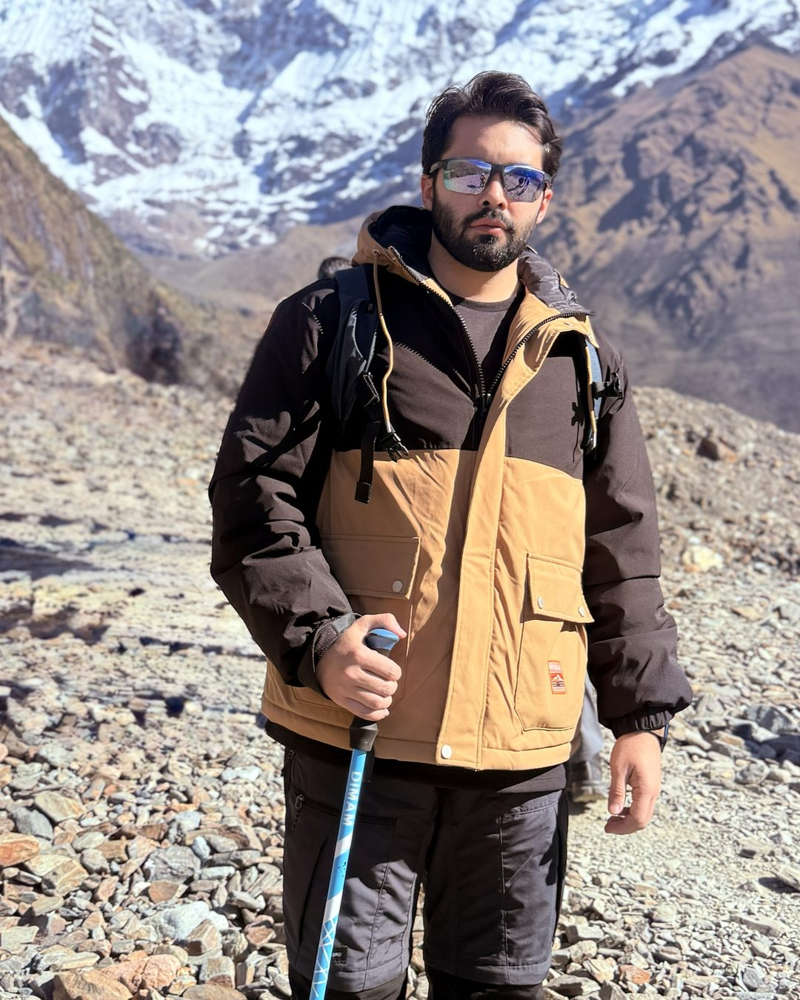

Doze anos levando produtos ao mercado.
Head de AI Product na Celcoin.
- Produto com IA
- cel_agents
- Pix
- Open Finance
- Design system
- Go-to-market
- Shell Box
- Discovery
- Internet Banking
- Product marketing

Produto de ponta a ponta.
Construí produtos digitais como PO, PM e Head of Product, assessorei diretorias e liderei times de vários níveis.

Onde trabalhei, do mais recente.
-
Hoje, Barueri, São Paulo
Head de AI Product
Celcoin
IA deixando de apoiar tarefas para participar da construção dos produtos financeiros.
- cel_agents
- Plataforma AI-first
- Produto, Design e Engenharia
cel_agentsVer o episódio sobre a plataforma -
2022, Barueri, São Paulo
Head of Product Marketing e Product Design
Celcoin
Lancei e sustentei o portfólio de produtos e liderei o time de designers e de product marketing.
- Go-to-market
- Pitch decks
- Transição de marca (M&A)
- Comunicação para a base
Celcoin_DSDesign system para várias marcas, usado por Produto e Tecnologia -
2020 a 2021, São Paulo
Senior Product Manager
Celcoin
Visão e estratégia do time de produtos, com KPIs medindo cada melhoria.
- Pix
- Tele Sena
- Saque emergencial
- Crédito
- 130+
- fintechs usando as APIs
- 33 mil+
- pequenos varejistas no app
-
2019 a 2021, Ribeirão Preto
Founder
Mizoor
Uma empresa de tecnologia para novas experiências na prática de esporte.
- Estratégia de marketing
- Vendas e operação
- Desenvolvimento do produto
-
2019 a 2020, Ribeirão Preto
Product Owner e Product Analyst
Beblue
Conversão, aquisição e retenção no app de cashback e no CRM de parceiros, guiadas por dados.
- Testes A/B
- Métricas North Star
- Pesquisa com usuários
- Analytics
-
2017 a 2019, Piracicaba
Analista de sistemas, Product Owner do Shell Box
Raízen
O app que paga o abastecimento nos postos Shell pelo celular, em Android e iOS.
- Histórias de usuário
- Backlog
- QA e UAT
- Scrum e Kanban
1 mi+downloads- PayPal
- Mercado Pago
- Crédito Shell
- Apple Pay
-
2017, Americana
Iniciação científica BICSAL/CNPq
UNISAL
Criei o Clube Binário para ensinar lógica de programação com Scratch a crianças da ONG Projeto Emanuel.
- Estrutura do curso
- Cronograma
- Congresso acadêmico
-
2015 a 2017, Piracicaba
Estagiário em projetos de TI
Raízen
Sistemas web integrados ao SAP, da especificação ao treinamento de quem usa.
- Cadastro
- Finanças
- Contratos
- Suprimentos
- Marketing
Meus diferenciais são planejamento e estratégia, comunicação, agilidade, marketing e design, para chegar a resultados de forma assertiva.
Product marketing
Go-to-market, posicionamento, pitch decks e comunicação de produto.
Product design
UX, UI e conteúdo para Pix, Open Finance e Internet Banking.
Gestão de produto
Visão, discovery e KPIs, de Product Owner a Head of Product.
Produto com IA
Plataformas AI-first como o cel_agents, da ideia ao produto testável.
Do técnico ao MBA.
| Curso | Instituição | Anos |
|---|---|---|
| MBA em Gestão de Negócios e Inovação | FIA Business School | 2020 a 2022 |
| Bacharelado em Sistemas de Informação | UNISAL, Centro Universitário Salesiano de São Paulo | 2014 a 2017 |
| Técnico de Informática | Escola Senai Alvares Romi | 2013 a 2014 |
Vamos falar do seu produto.
- link do perfil
- Base
- Barueri, São Paulo
- Mensagem
- Escrever pelo site